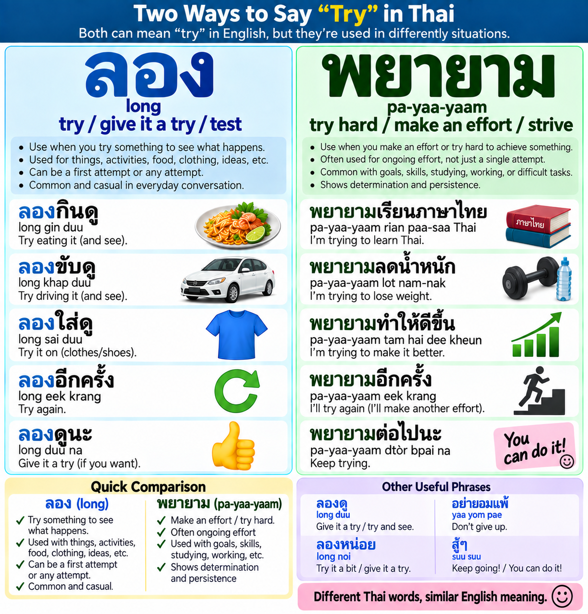

Thai Study← All Guides
Two Ways to Say Try in Thai
50 bilingual questions. Read both the English and Thai situation, then choose the best word.

ลอง
longTry it / test it / experience it and see what happens.
พยายาม
pa-yaa-yaamTry hard / make an effort / work toward a result.
Student Profile
No password required. Progress is saved on this browser/device.